Portfolio Projects Explorer (11 Projects in Integrated Windows View)
A collection of software, operating systems, and networking projects. Click any screenshot once to view it in full screen, or use the filter buttons to browse by topic.
Ancient Greek Learning Web App
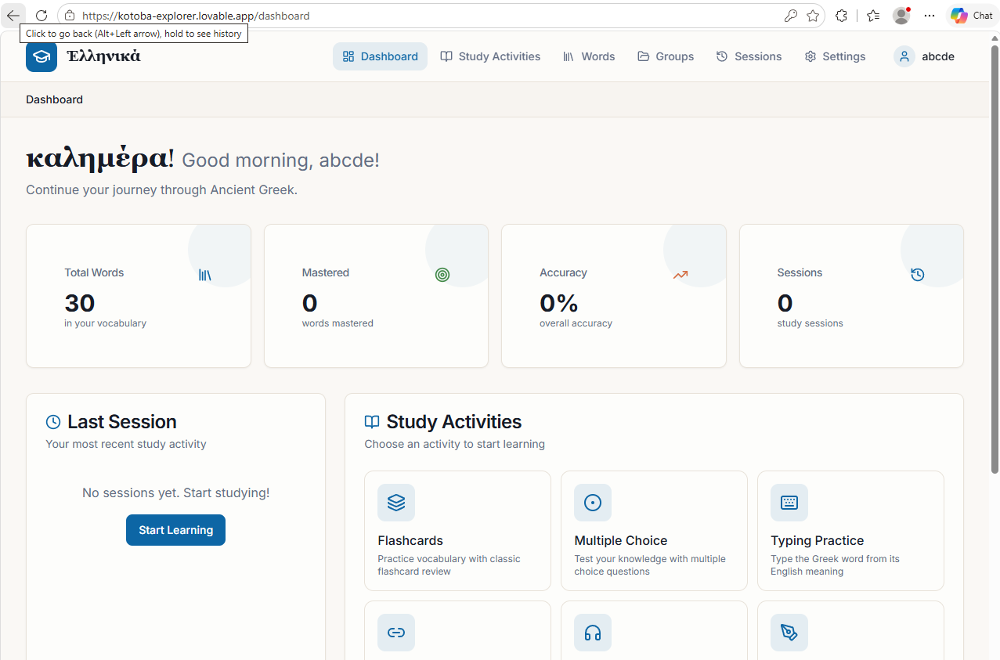
An interactive web app that helps students practice and learn Ancient Greek vocabulary.
URL: kotoba-explorer.lovable.app
GitHub: AF2310/greek-bloom
- Built with TypeScript and React 19
- Fast website build using Vite and Bun
- Styled with Tailwind CSS components
What I learned: Setting up the modern React 19 libraries and fixing styling issues so buttons look good on mobile screens.
.NET Project Scanner (WinForms)
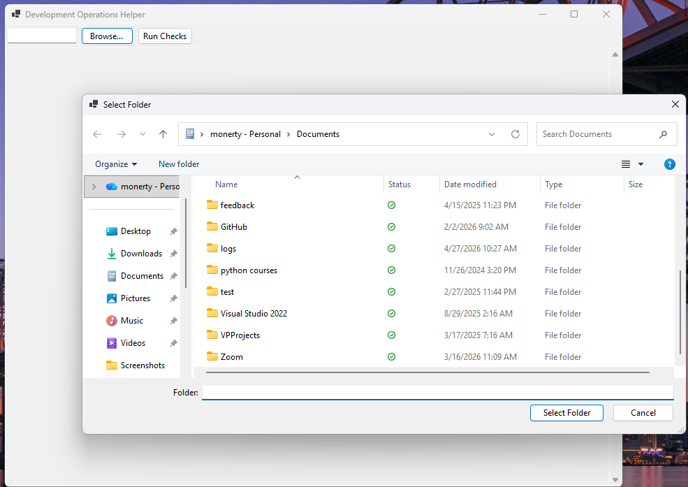
A desktop tool made with C# Windows Forms. It searches folders for .NET projects, builds them automatically, and shows test results.
GitHub: AF2310/Devops-Helper
- Created with C# and .NET 8 on Windows Forms
- Finds solution (.sln) and project (.csproj) files
- Runs build and test commands with one click
- Exports results to a clean JSON report file
What I learned: Running command-line tools in the background so the desktop window stays smooth and doesn't freeze while building.
Automated Security Testing Pipeline
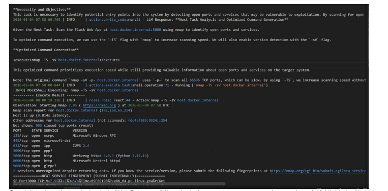
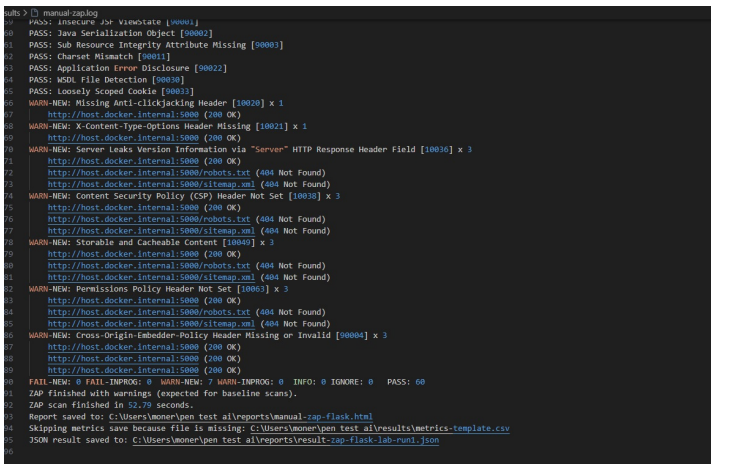
An automated Python tool that scans web applications for security weaknesses using OWASP ZAP and a local AI assistant.
GitHub: AF2310/applying-pentesting-tools
- Written in Python using a local Ollama AI model
- Runs automatic website vulnerability scans with OWASP ZAP
- Tests applications running inside Docker containers
What I learned: Connecting Python scripts to Docker containers and parsing security reports to find high-risk vulnerabilities.
Kiosk Self-Service Application
.png "Kiosk Screen 1: Menu selection - Click to expand")
.png "Kiosk Screen 2: Meal customization - Click to expand")
.png "Kiosk Screen 3: Order review - Click to expand")
.png "Kiosk Screen 4: Cart and extras - Click to expand")
.png "Kiosk Screen 5: Payment flow - Click to expand")
.png "Kiosk Screen 6: Final receipt - Click to expand")
A touchscreen ordering application for a fast food restaurant. Customers can browse meals, customize burgers, and check out.
GitHub: AF2310/KIOSK
- Desktop interface built with Java and JavaFX
- Stores menu items and orders in a MySQL database
- Calculates cart totals, sales tax, and prints receipts
What I learned: Designing clean, touchscreen-friendly buttons in JavaFX and connecting order screens directly to a MySQL database.
Home Alarm System (IoT)
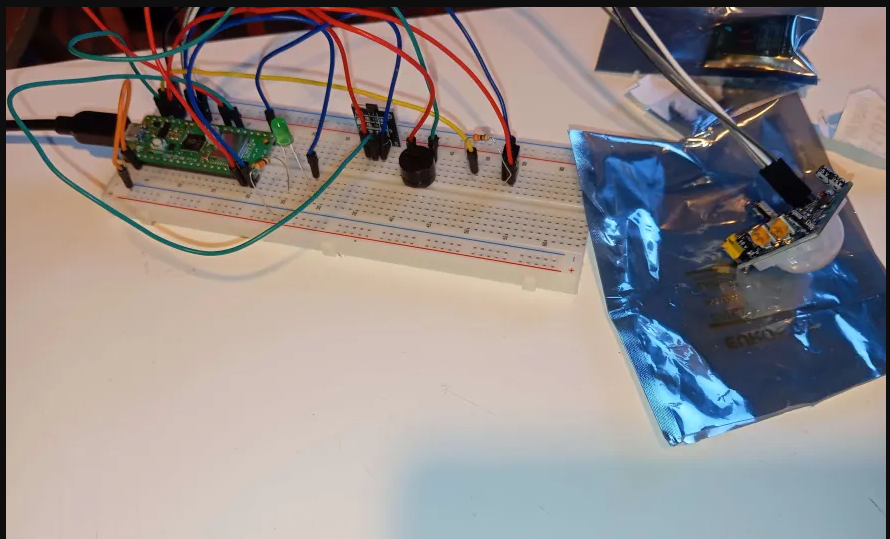
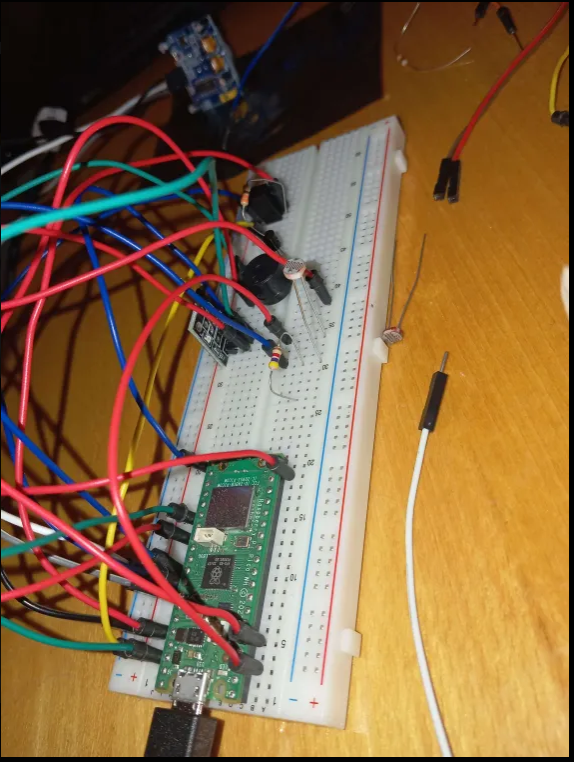
A physical home security system built with a Raspberry Pi Pico board. It uses motion and light sensors to detect intruders and sends alerts over Wi-Fi.
GitHub: AF2310/Home-Alarm-System
- Programmed in MicroPython on a Raspberry Pi Pico
- Uses PIR motion sensors, magnetic door sensors, and buzzers
- Displays live status on a small LCD screen
- Sends real-time alarm alerts using MQTT and webhooks
What I learned: Wiring components cleanly on a breadboard and tuning the motion sensor so it only triggers on real movement.
Solar System Simulation
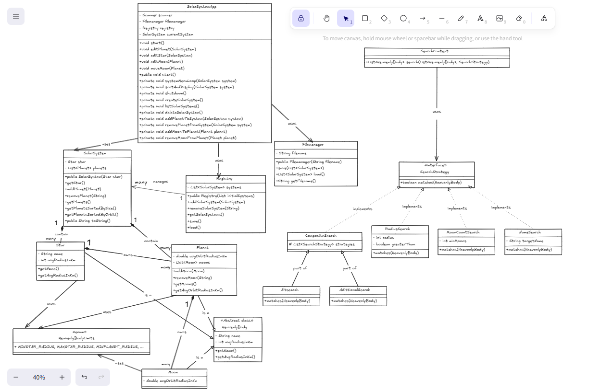
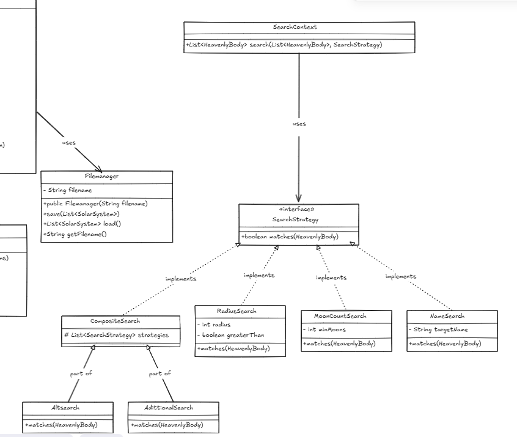
A Java program that models the planets and moons in our solar system using object-oriented programming.
GitHub: AF2310/Solar-System
- Built with Java using the Gradle build tool
- Organized with classes for planets, moons, and stars
- Lets you search, sort, and move celestial bodies
- Unit tests to verify math and input validation
What I learned: Setting up class inheritance so moons stay linked to their parent planets, and writing unit tests to catch calculation bugs.
Maxi-Yatzy Multi-Player Game
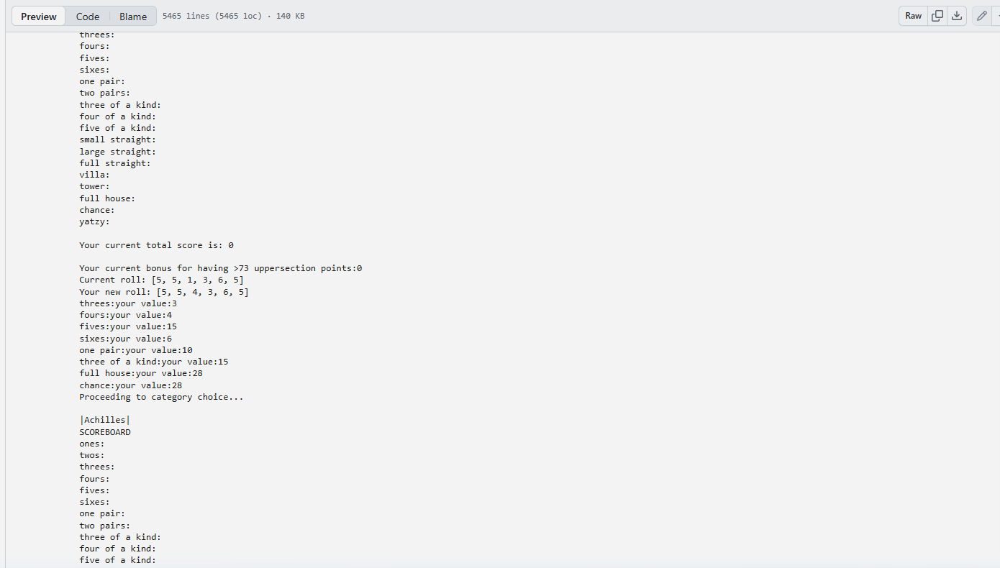
A multiplayer Maxi Yatzy dice game played in Python and Jupyter Notebook. Players roll dice, choose which to keep, and fill their scorecards.
GitHub: AF2310/Maxi-yatzy-game
- Written in Python 3 inside a Jupyter Notebook
- Built with functional programming principles
- Tracks turns and scoreboards for multiple players
- Calculates points automatically for each Yatzy category
What I learned: Writing game logic with pure functions so rolling and rerolling dice never accidentally overwrites another player's score.
Operating Systems Suite
Two Java projects that simulate how computer operating systems manage memory and decide which programs run next.
Memory Manager: AF2310/memory-manager2
CPU Scheduler: AF2310/cpu-scheduler
- Simulates virtual memory paging and page replacement algorithms
- Simulates Round Robin and First-Come First-Served CPU scheduling
- Measures average process wait times and CPU utilization
What I learned: Understanding how computers split program memory into pages and keeping track of wait times for each running process.
Network Protocols & Appliance Testing
Three networking projects: building a custom HTTP web server from scratch, a TFTP file server over UDP, and testing a NAT64 network appliance.
HTTP Web Server: AF2310/http_web_server_
TFTP Protocol Server: AF2310/tftp-web-server
NAT64 Appliance Test: AF2310/ttg-appliance-testing
- Java multi-threaded HTTP server that serves web pages and file uploads
- Java TFTP server that transfers files over UDP sockets with retransmissions
- Python tests for a NAT64 DNS server translating IPv4 and IPv6 addresses
What I learned: Sending and receiving raw network packets over sockets and handling connection timeouts when transferring files.
Linux Admin & Shell Automation
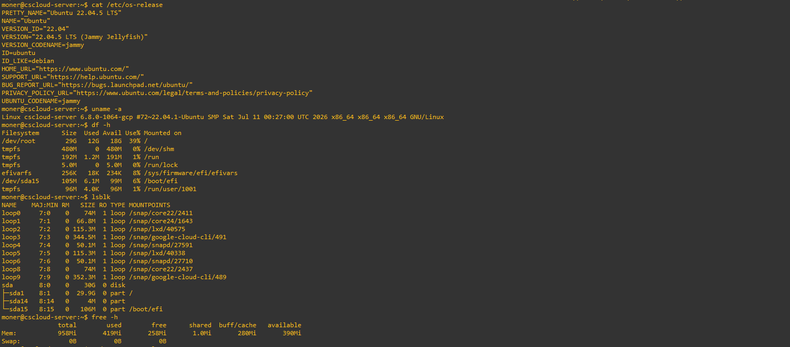
A collection of Linux system administration coursework, shell scripts, and security configurations.
1DV721 Coursework: AF2310/working-with-linux
Bash Introduction: AF2310/Bash-introduction
- Managing Linux users, groups, and file permissions
- Automating common tasks with Bash shell scripts
- Documenting security best practices for university coursework
What I learned: Learning Linux terminal tools like grep and awk, and writing scripts to automate routine system administration tasks.
Windows Forms Applications
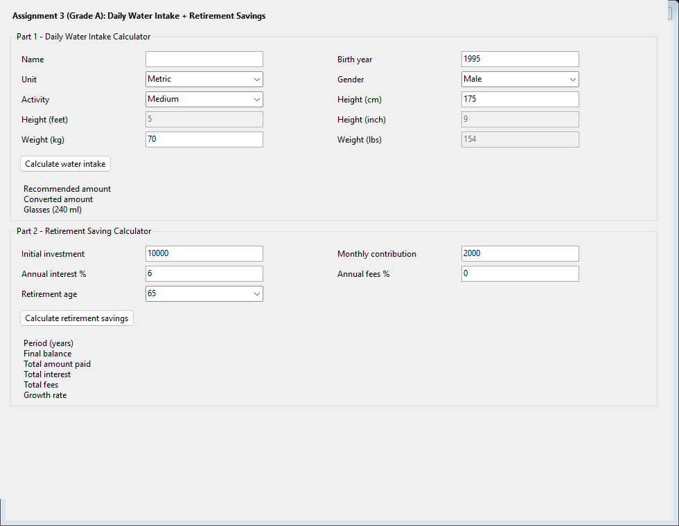
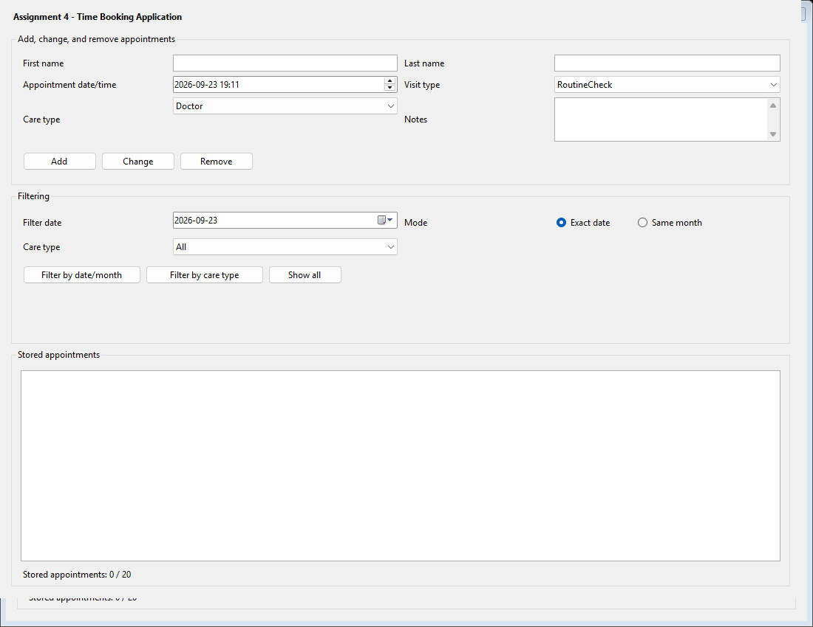
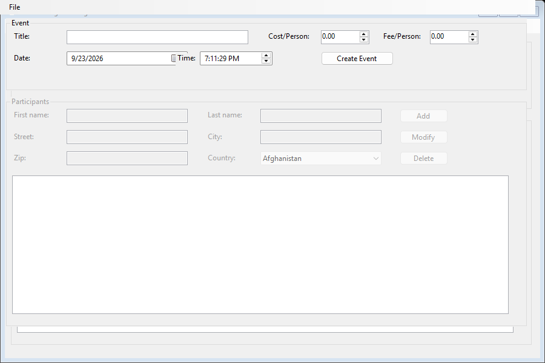
A collection of three desktop applications created with C# and .NET Windows Forms to practice object-oriented design and desktop user interfaces.
GitHub: AF2310/windows-form-applications
- Calculator (Assignment 3): Calculates daily water needs based on weight and activity, plus long-term retirement savings with monthly deposits.
- Appointment Manager (Assignment 4): A time booking tool to create, edit, delete, and filter scheduled appointments by time and status.
- Event Manager (Assignment 5): Manages event participants, addresses, and fee calculations with structured lists and live totals.
What I learned: Designing clear Windows desktop layouts, connecting buttons and inputs to object-oriented managers, and validating input so the app never crashes.